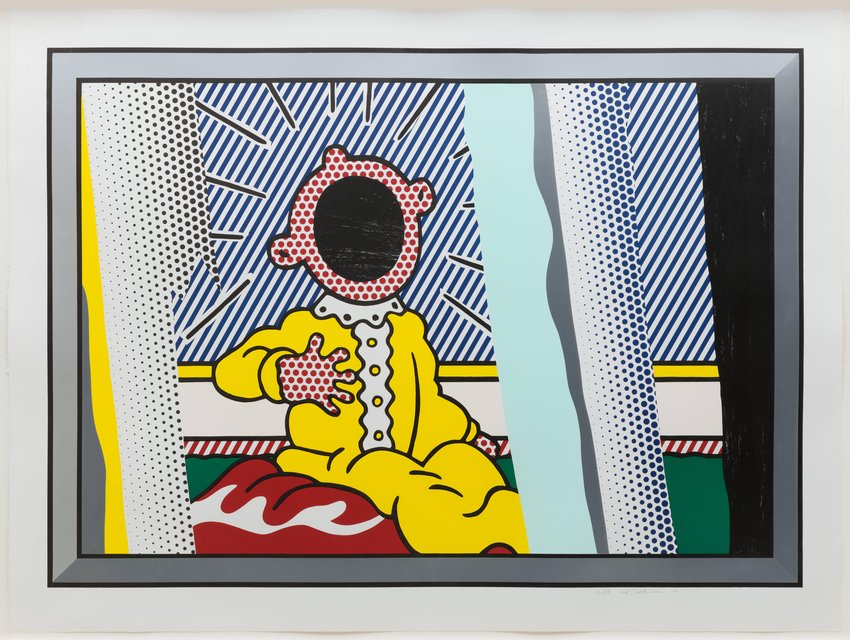
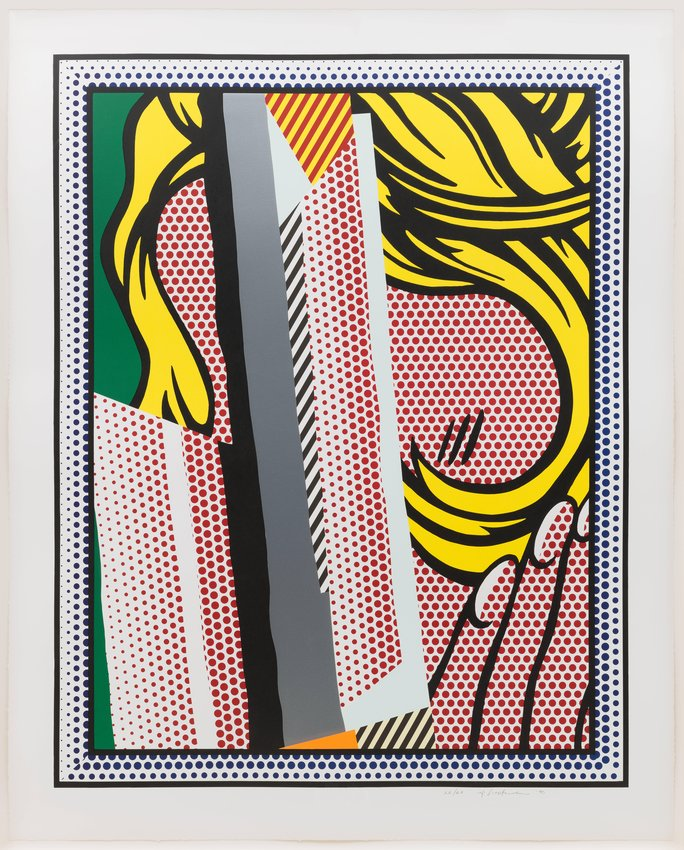
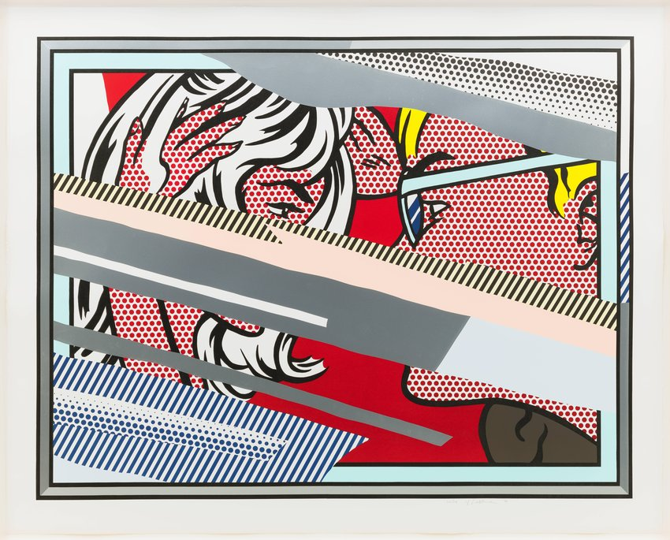
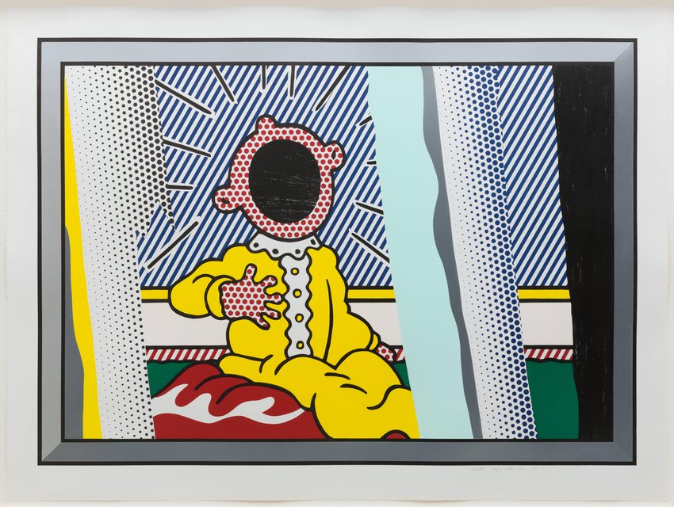
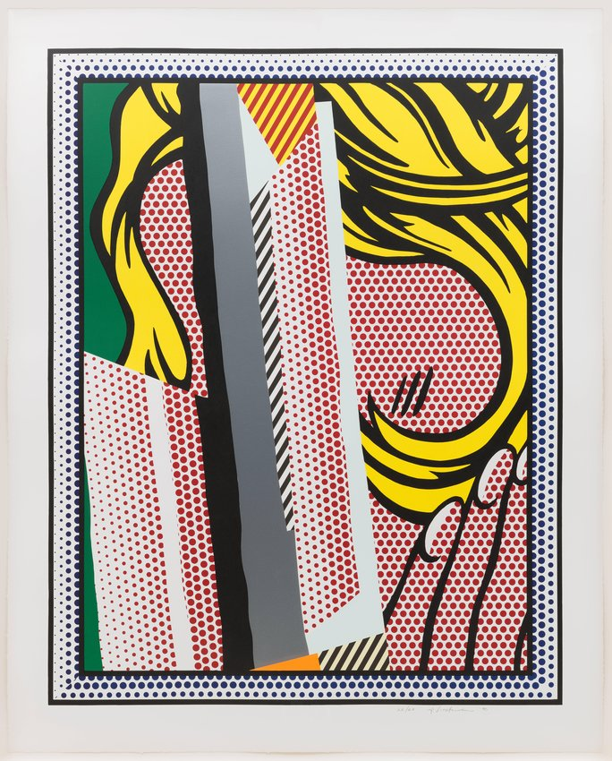
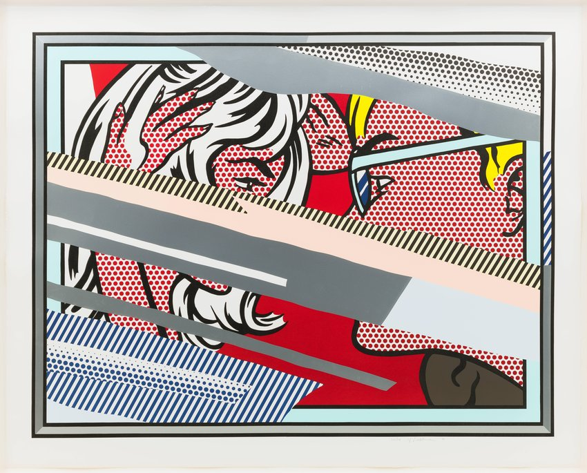

COLLECTION
Roy Lichtenstein, Reflections on The Scream, 1990; lithograph,
screenprint, woodcut,and metalized PVC collage with embossing, 48
3/4 in. x 65 1/4 in. (123.83 cm x 165.74 cm); The Doris and Donald Fisher
Collection at the San Francisco Museum of Modern Art; © Estate of Roy Lichtenstein
screenprint, woodcut, and metalized PVC collage with embossing, 53
5/8 in. x 67 in. (136.21 cm x 170.18 cm); The Doris and Donald Fisher
Collection at the San Francisco Museum of Modern Art; © Estate
of Roy Lichtenstein
woodcut, and metalized PVC collage with embossing, 53 5/8 in. x 67 in. (136.21 cm x
170.18 cm); The Doris and Donald Fisher Collection at the San Francisco Museum of
Modern Art; © Estate of Roy Lichtenstein
1923, New York City, New York
1997, New York City, New York
based on generic romance books and war comics. Lichtenstein transferred the clichéd comic-book
compositions to canvas with a projector and simplified them; the resulting paintings mimic the impersonal
appearance of cheap four-color printing, despite being meticulously handmade. Characteristic of this work
are the enlarged benday dots that would become Lichtenstein's signature mark.
Lichtenstein abandoned working on comics paintings by the mid-1960s, but he retained a lifelong interest in
the mass media. His later work often addressed how an artwork's meaning changed when it was reproduced
and distributed as a commercial image.
 




